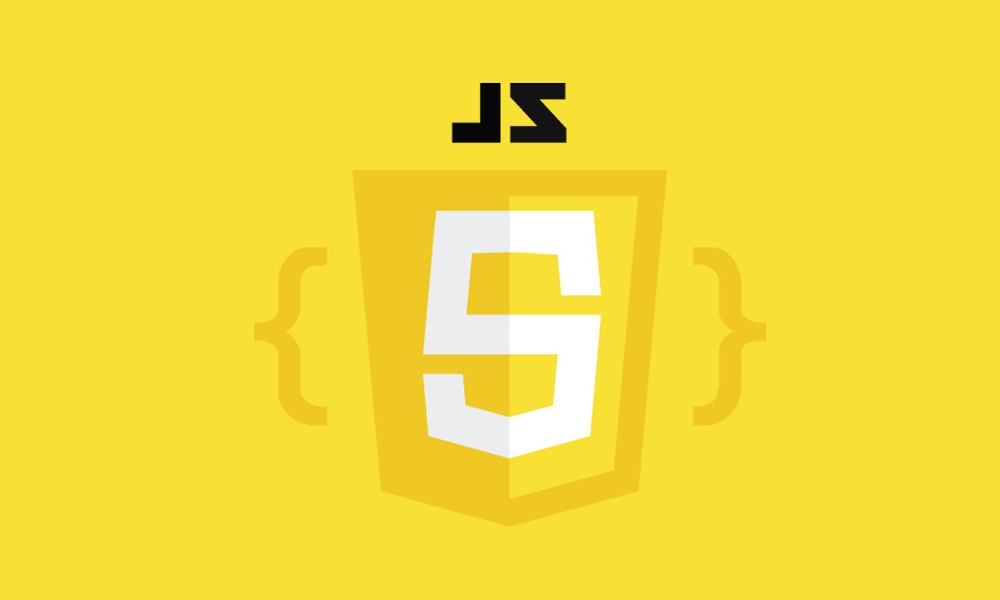

Advanced skills in HTML5
Hi I'm
Josh Arendse
Junior Web Developer
About Me
"A hard-working, driven and technically minded guy. I'm easy to get along with, work well within a team and am passionate about coding."
Outlook
Become a Senior Web Developer by the age of 25.
Music
My favourite artist at the moment is Chris Brown.
Recreational
Achievement Grinder (Gaming), Pool Enthusiast.
Projects
Rebuilding Jon Chretien
My first project based on css grids and learning
how to use them. I had to replicate Jon Chretians site
basing most of the content in grid format.
Dummy Site
A dummy site that was created showcasing basic
Javascript skills with simplistic elements as a key highlight.
Work and Education
Spur - Waiter
As a waiter my daily duties consisted of various tasks
which included providing a professional service delivery
as well as barista work.
Duration: March 2016 - September 2016
Woolworths - Sales Floor Assistant
I am Currently working part-time for Woolworths Kromboom Branch
of which my duties includes stock intakes and checking,
Quality Control, as well as POS interaction.
Duration: October 2016 - Current
Education & Training
Matriculated in 2015 with a
bachelors pass at Windsor Senior Secondary.Completed 8 Week mindfulness course with Jenny Canau, October 2018 - November 2018.
Successfully completed 6 month coding course at Salesian lifeChoices Academy August 2018 - February 2019.
Attended Deloitte 3 day proffessional development workshop February 26-28 2019.
Skillset
Advanced knowledge of animations and CSS3

Basic knowledge of JS (introduction)
Intermediate level skills
based on PHP7
Intermediate level skills in MySQL including terminal and phpMyAdmin
Consistent use of Github
for storage and project updates